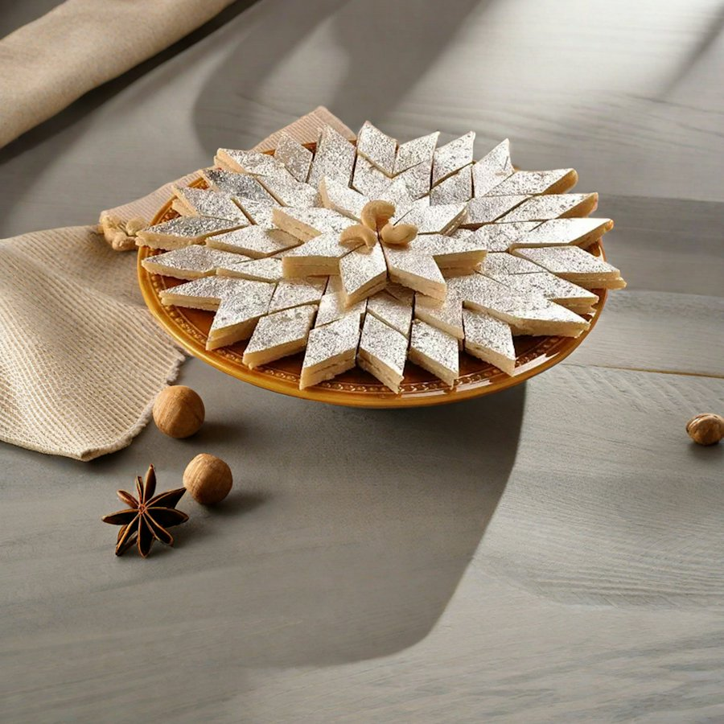
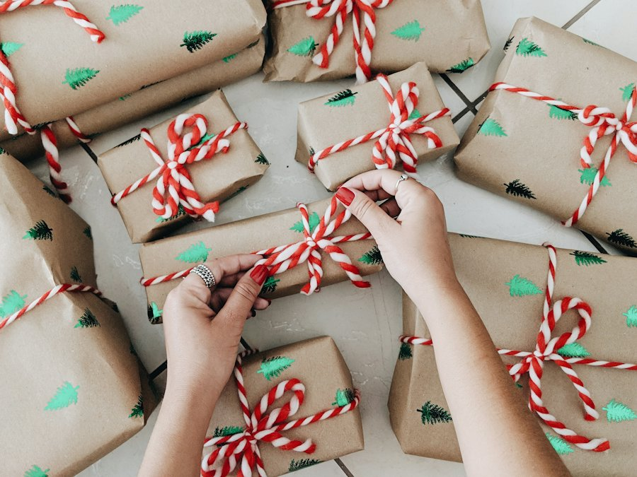
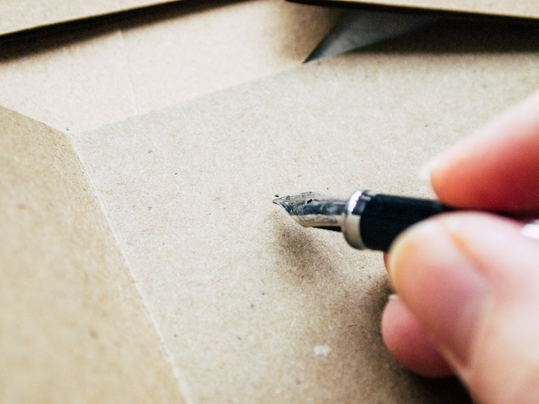
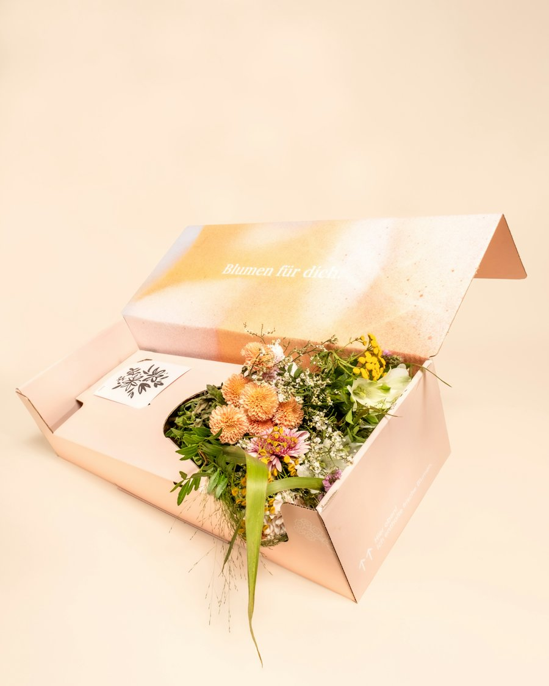

A gift should feel like someone thought about it.
Zariva is a small gifting studio in Sydney. We choose every item, pack every hamper by hand and write every card out in ink, because that’s the part people remember.
Why we started
In the families we grew up in, a gift came with food, a card and a visit. Sending that feeling across Australia was harder than it should have been. Most hampers were either generic or felt like they came from a warehouse.
So we started packing them ourselves: mithai from Harris Park next to Tasmanian honey, a protea from the flower market, a card written out properly. Friends asked for them for Diwali, then for weddings, then their offices started ordering for Christmas.
Zariva is still that idea, just with more hands. Every hamper is packed on the day it leaves us, and every card is written by someone in our studio.
The Zariva studio
How we make a hamper
- 1

We choose every item
From more than 40 Australian makers, most of them small, family-run kitchens and studios. We taste and test everything first.
- 2

We pack it by hand
On the day it leaves us, in a rigid box with recycled paper shred and grosgrain ribbon in the colour of the occasion.
- 3

We write your card
In ink, by someone in our studio, using the words you gave us. A blank card is always free if you’d rather write your own.
- 4

We send it on time
Same-day in Sydney and Melbourne metro, 1–2 days to other capitals, tracked the whole way.
What we hold to
Australian-made first
Around four in five items in our hampers are grown, baked, poured or made in Australia. Where something has to come from further away, like brass diyas from Moradabad, we buy direct.
Packaging that gets reused
Rigid boxes people keep, FSC-certified card, paper shred instead of plastic fill, and trunks and tins that end up holding letters and buttons.
Every culture’s calendar
Diwali, Christmas, Eid, Lunar New Year: the occasions our customers celebrate are the ones we plan our year around.
Real people, quick replies
Call or email and you’ll reach our studio team, usually within the hour on weekdays.
Some of the places our hampers come from
A few of the regions and suburbs our makers work in.
- Mithai and sweetsHarris Park, NSW
- SaffronHuon Valley, TAS
- ShirazBarossa Valley, SA
- Soy candlesByron Bay, NSW
- Chocolate and trufflesDaylesford, VIC
- Leatherwood honeyTarkine, TAS
- Specialty coffeeMarrickville, NSW
- MacadamiasBundaberg, QLD
- Body oilMargaret River, WA
We pack every hamper on Gadigal land.
We acknowledge the Traditional Custodians of the lands across Australia where our makers grow, bake and pour, and pay our respects to Elders past and present.